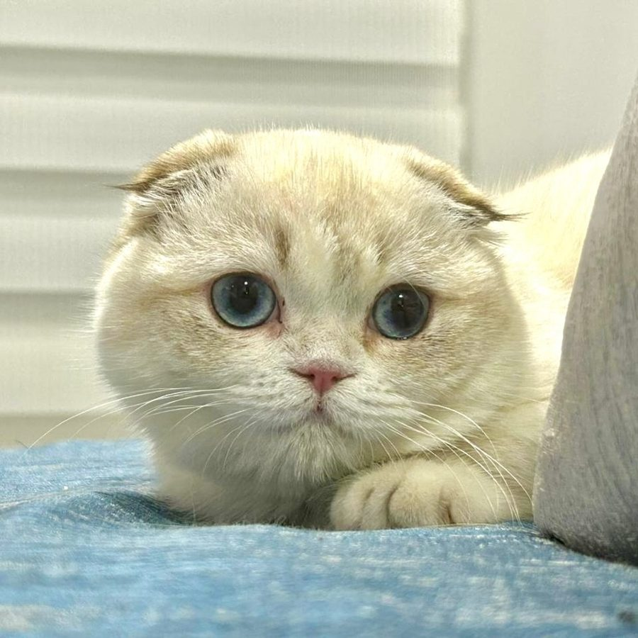

Gato Munchkin Fold en Medellín y Colombia
El Munchkin Fold combina patas cortas con orejas plegadas hacia adelante y una mirada tierna. Aquí encuentras cómo es y qué incluye la entrega.

Fotografía de uno de nuestros gatitos.
¿Qué es el Munchkin Fold?
El Munchkin Fold tiene genes del Munchkin y del Scottish Fold. Combina patas cortas con orejas plegadas hacia adelante y una cara redonda y dulce. Nuestros gatos enanos fueron importados de Rusia.
- Genes
- Munchkin y Scottish Fold
- Peso adulto
- 2 a 4 kg
- Rasgo único
- Orejas plegadas hacia adelante y patas cortas
- Carácter (según nuestra experiencia)
- Dulce, tranquilo, compañero y muy apegado a su familia
- Cuidados
- Cepillado semanal y revisión de orejas
- Alergias
- Condición hipoalergénica natural, según nuestra experiencia
Cuidados
El pelaje se cuida con cepillado semanal y conviene revisar las orejas con regularidad. Es un gato de compañía, muy apegado a su familia.
Salud y garantía
- Vacunado y desparasitado, incluido en la entrega.
- Esterilizado con veterinario certificado en microcirugía.
- Documento de raza y reserva, con garantía de raza y garantía del gatito.
- Acompañamiento y orientación veterinaria después de la entrega.
Muchas familias sensibles a los gatos han convivido bien con nuestros gatitos. Si tienes alergia, ven a conocerlos antes de reservar.
Pide siempre los datos de salud de tu gatito y consulta a tu veterinario de confianza.
Precio y proceso de adquisición
Los gatos enanos tienen un valor de referencia de entre $4.000.000 y $7.000.000 pesos colombianos, según la raza, el gatito y su línea genética. El valor final te lo confirmamos por WhatsApp o llamada. Entregamos en Colombia y orientamos los trámites de envío al exterior. Ver cómo adquirir tu gatito.
Preguntar por Munchkin Fold en WhatsApp
← Volver a la página principal
Otras razas y guías
MunchkinMinuetKinkalowBambinoDwelfGenettaVer todas las razas